철도차량기사 (2010-05-09 기출문제)
1과목: 재료역학
1. 밀도가 일정한 정육면체 물체의 각 변의 길이가 처음의 3배로 되었을 때 이 정육면체의 바닥면에 발생되는 자중에 의한 수직 응력의 크기는 처음의 몇 배가 되겠는가?
- 1
- 3
- 9
- 27
(정답률: 알수없음)

2. 균일분포하중 ω를 받고 있는 길이가 L인 단순보의 처짐을 δ로 제한한다면 균일 분포하중의 크기는 어떻게 표현되겠는가? (단, 보의 단면은 폭이 b이고 높이가 h인 직사각형이고 탄성계수는 E 이다.)
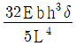
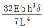
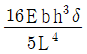
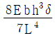
(정답률: 알수없음)
3. 코일 스프링의 소선의 지름을 d, 코일의 평균 지름을 D, 코일 전체의 길이가 L인 경우 인장하중 W를 작용시킬 때 전체의 처짐량(δ)을 나타내는 식은? (단, G는 전단 탄성계수이고, n은 코일의 감김 수이다.)
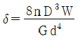
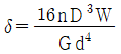
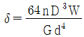
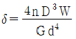
(정답률: 알수없음)
4. 아래 그림에서 모멘트의 최대값은 몇 kN·m 인가? (단, B점은 고정이다.)
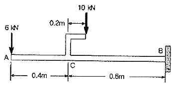
- 10
- 16
- 26
- 40
(정답률: 알수없음)
5. 길이가 2m인 환봉에 인장하중을 가하였더니 길이 변화량이 0.14cm 였다. 이 때의 변형률은?
- 70×10-6
- 700×10-6
- 70
- 700
(정답률: 알수없음)
6. 지름 d인 원형단면 봉이 비틀림 모멘트 T를 받을 때, 발생되는 최대 전단응력 τ를 나타내는 식은? (단, IP는 단면의 극단면 2차 모멘트이다.)
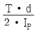
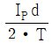
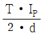
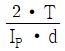
(정답률: 알수없음)
7. 내부 반지름 1.25m, 압력 1200kPa, 두께 10mm인 원형 단면의 실린더형 압력 용기에서의 축방향 응력(σt : longitudinal stress)과 후프응력(σz : circumferential stress)를 구하면?
- σt = 75MPa, σz = 150MPa
- σt = 150MPa, σz = 75MPa
- σt = 37.5MPa, σz = 75MPa
- σt = 75MPa, σz = 37.5MPa
(정답률: 알수없음)
8. 그림과 같은 복합 막대가 각각 단면적 AAB= 100mm2, ABC = 200mm2을 갖는 두 부분 AB와 BC로 되어있다. 막대가 100kN의 인장하중을 받을 때 신장량을 구하면 몇 mm 인가? (단, 재료의 탄성계수(E)는 200GPa 이다.)
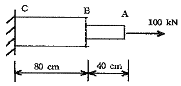
- 2
- 4
- 6
- 8
(정답률: 알수없음)
9. 그림과 같이 균일 분포하중(ω)을 받는 균일 단면 외팔보의 자유단 B에서의 처짐량은? (단, 보의 굽힘 강성 EI는 일정하고, 자중은 무시한다.)
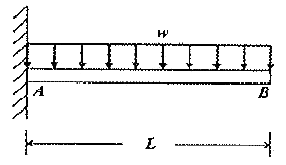
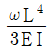
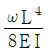
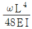
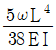
(정답률: 알수없음)
10. 그림과 같은 균일 단면의 돌출보(overhanging beam)에서 반력 RA는? (단, 보의 자중은 무시한다.)
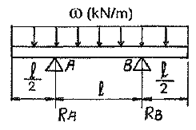
- ωℓ
- ωℓ/4
- ωℓ/3
- ωℓ/2
(정답률: 알수없음)
11. 그림과 같은 균일 원형단면을 갖는 양단 고정봉의 C점에 비틀림 모멘트 T= 98N·m를 작용시킬 때, 하중점(C점)에서의 비틀림 각은 몇 rad인가? (단, 전단탄성계수 G=78.4 GPa, 극관성모멘트 IP = 600cm4 이다.)
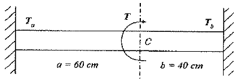
- 4×10-4
- 4×10-5
- 5×10-4
- 5×10-5
(정답률: 알수없음)
12. 어떤 재료의 탄성계수 E=210GPa 이고 전단 탄성계수 G=83GPa 이라면 이 재료의 포아송 비는? (단, 재료는 균일 및 균질하며, 선형 탄성거동을 한다.)
- 0.265
- 0.115
- 1.0
- 0.435
(정답률: 알수없음)
13. 탄성계수 E=200GPa, 좌굴응력 σB=320MPa 인 강재 기둥에 오일러(Euler) 공식을 적용할 수 있는 한계 세장비는? (단, n은 양단지지 상태에 따른 좌굴 계수이다.)
- 62.5 √n
- 78.5 √n
- 85.5 √n
- 90.5 √n
(정답률: 알수없음)
14. 지름 6mm인 곧은 강선을 지름 1.2m의 원통에 감았을 때 강선에 생기는 최대 굽힘 응력은 약 몇 MPa 인가? (단, 탄성계수 E = 200 GPa 이다.)
- 500
- 800
- 900
- 1000
(정답률: 알수없음)
15. 그림과 같은 보는 균일단면 부정정보이다. 반력 RB를 구하는데 필요한 조건은?
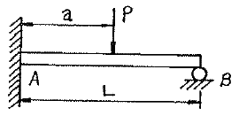
- 지점 B에서의 반력에 의한 처짐
- 지점 A에서의 굽힘모멘트의 방향
- 하중 작용점 P에서의 처짐
- 하중 작용점 P에서의 굽힘응력
(정답률: 알수없음)
16. 5cm×10cm 단면의 3개의 목재를 목재용 접착제로 접착하여 그림과 같은 10cm×15cm의 사각 단면을 갖는 합성보를 만들었다. 접착부에 발생하는 전단응력은 약 몇 kPa 인가? (단, 이 보의 길이는 2m 이고, 양단온 단순지지이며 중앙에 P=800N 의 집중하중을 받는다.)
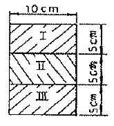
- 77.6
- 35.5
- 8
- 160
(정답률: 알수없음)
17. 다음 그림과 같이 단면적인 A인 강봉의 축선을 따라 하중 P가 작용할 때, 임의의 경사 평면에서 전단응력이 최대가 될 때의 면의 각(α)과 이 경우에 해당하는 전단응력(τmax)은 얼마인가?
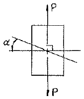
- α = 45°, τmax = P/A
- α = 45°, τmax = P/2A
- α = 90°, τmax = P/A
- α = 90°, τmax = P/2A
(정답률: 알수없음)
18. 그림과 같이 초기온도 20℃. 초기길이 19.95cm, 지름 5cm인 봉을 간격이 20cm인 두 벽면 사이에 넣고 봉의 온도를 220℃로 가열했을 때 봉에 발생되는 응력은 몇 MPa 인가? (단, 균일 단면을 갖는 봉의 선팽창계수 a = 1.2×10-5/℃ 이고, 탄성계수 E = 210GPa 이다.)
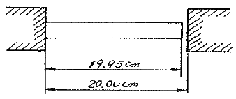
- 0
- 25.2
- 257
- 504
(정답률: 알수없음)
19. 내부 반지름 Ri, 외부 반지름 Ro인 속이 빈 원형 단면의 극(polar)관성 모멘트는?
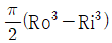
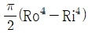
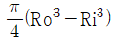
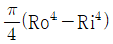
(정답률: 알수없음)
20. 그림에서 블록 A를 뽑아내는 데 필요한 힘 P는 몇 N 이상인가? (단, 블록과 접촉면과의 마찰 계수 μ= 0.4 이다.)
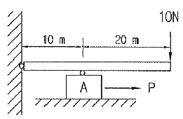
- 4
- 8
- 10
- 12
(정답률: 알수없음)
2과목: 내연기관
21. 가솔린기관에서 기화기 방식에 비해 가솔린 분사장치의 장점으로 틀린 것은?
- 기화열로 인한 빙결장치가 필요 없고 충진 효율이 증가된다.
- 기화를 촉진시키기 위한 혼합기를 가열할 필요가 없어 체적효율을 증가시킨다.
- 분사관 내의 증기발생으로 인한 고온시동이 용이하다.
- 연료공기의 조정이 독립적으로 이루어지므로 혼합비의 조정이 확실하다.
(정답률: 알수없음)
22. 도시평균 유효압력 8.5kPa, 제동평균 유효압력 7.2kPa 일 때 기계 효율은?
- 약 80%
- 약 85%
- 약 90%
- 약 95%
(정답률: 알수없음)
23. 디젤기관용 연료인 경유의 점도에 대한 설명으로 틀린 것은?
- 점도가 낮을수록 관통력이 불량해진다.
- 점도가 낮을수록 잔류분을 퇴적시키고 연기와 악취가 발생된다.
- 점도가 너무 크면 불완전 연소한다.
- 점도가 너무 크면 분포성이 불량해진다.
(정답률: 알수없음)
24. 디젤기관의 연료분사에서 무화가 나쁘게 되는 경우는?
- 분사압력이 클 때
- 분배압이 낮을 때
- 연료유 온도가 높을 때
- 노즐 직경이 작을 때
(정답률: 알수없음)
25. 가솔린의 1kg 당 발열량이 46000kJ/kg 이고 연료의 30%가 일로 바꾸어진다면 가솔린 1kg의 연료로 500kg의 무게를 얼마나 이동시킬 수 있는가?
- 약 1409m
- 약 1973m
- 약 2816m
- 약 2982m
(정답률: 알수없음)
26. 가솔린의 비중이 0.75일 때 가솔린 20L의 중량은?
- 147N
- 14.7N
- 261N
- 26.1N
(정답률: 알수없음)
27. 디젤기관 분사장치에서 조속기(governor)의 앵글라이히 장치의 작용으로 옳은 것은?
- 막판의 위치를 조정하여 분사량을 가감한다.
- 조정 래크의 위치를 변경시켜 분사량을 크게 한다.
- 동일한 제어 래크의 위치에서 연료의 비율을 유지한다.
- 조정 래크의 위치를 변경시켜 분사량을 적게 한다.
(정답률: 알수없음)
28. 디젤기관의 제어장치에서 동력 전달계의 탄성과 유격 때문에 부하 교반시 꿀꺽(bucking) 거리는 현상을 감쇠시키는 제어는?
- 대기압 보상 전부하 스톱제어
- 절대과급압력 보상 전부하 스톱제어
- 서지 감쇠제어
- 전부하 분사량 제어
(정답률: 알수없음)
29. 4행정기관에서 피스톤의 평균속도가 15m/s이고 기관의 회전수가 4,000rpm이면 피스톤의 행정은?
- 11.25cm
- 12.25cm
- 13.25cm
- 14.25cm
(정답률: 알수없음)
30. 기관에서 밸브양정과 밸브지름이 기관에 미치는 영향에 대한 설명으로 옳은 것은?
- 지름을 크게 하면 밸브의 지름과 양정의 비율 때문에 밸브의 가속도가 작아진다.
- 지름을 작게 하면 밸브의 지름과 양정의 비율 때문에 체적 효율이 좋아진다.
- 밸브의 양정을 크게 하면 밸브의 지름과 양정의 비율 때문에 체적효율이 증가한다.
- 밸브의 양정을 크게 하면 밸브의 지름과 양정의 비율 때문에 가스 유동면적이 작아진다.
(정답률: 알수없음)
31. 내연기관의 사이클 중 가스 터빈의 사이클에 대한 설명으로 틀린 것은?
- 2개의 정압과정과 2개의 단열과정으로 구성된다.
- 브레이턴 사이클 또는 줄 사이클이라고도 한다.
- 단열 압축과정 → 정압 급열과정 → 단열 팽창과정 → 정압 방열과정으로 구성된다.
- 열효율은 터빈에 유입되는 가스온도와 열교환기에 유입되는 공기온도가 높을수록 좋다.
(정답률: 알수없음)
32. 내연기관의 수냉식 냉각시스템에서 가압식 방열기 캡에 대한 설명으로 옳은 것은?
- 부압밸브는 기관의 온도가 내려가 방열기 내부의 압력이 대기압보다 높아졌을 때 열린다.
- 부압밸브는 방열기 내부 압력과 외부 대기압의 차이에 의해 방열기가 파손되는 것을 방지한다.
- 냉각수 온도가 상승하면 냉각수의 체적이 커지고 그 분량만큼 보조탱크에서 방열기로 흘러간다.
- 가압식 방열기 캡은 압력밸브와 지글밸브가 설치되어 있다.
(정답률: 알수없음)
33. 내연기관의 기본 사이클에서 열효율과 압축비와의 관계로 틀린 것은?
- 기본 사이클 모두 압축비 증가에 따라 열효율이 증가한다.
- 사바테 사이클은 차단비가 증가하면 열효율이 증가한다.
- 오토 사이클은 압축비 증가만으로 열효율을 높일 수 있으나 노킹 때문에 제한 받는다.
- 디젤 사이클은 차단비가 증가하면 열효율이 감소한다.
(정답률: 알수없음)
34. 가솔린기관에 비하여 디젤기관의 장점이 아닌 것은?
- 열효율이 높아 연료 소비율이 적다.
- 저속 고출력이 가능하다.
- CO, HC의 배출량이 비교적 적다.
- 실린더 체적당 출력이 크다.
(정답률: 알수없음)
35. 밸브가 기관에 미치는 영향에 대한 설명으로 틀린 것은?
- 밸브 스템의 오일 실이 마모될 경우 기관의 오일이 연소실로 유입된다.
- 고회전 영역에서 밸브의 오버랩은 크게 하고 밸브 리프트는 작게 하면 흡입효율이 상승한다.
- 흡기 밸브가 1개일 때보다 2개일 때 흡입통로가 커져 흡입효율은 상승한다.
- 밸브의 페이스는 밸브 시트와 밀착하여 기밀작용을 하므로 밸브페이스가 불량하면 기관의 압축압력이 저하된다.
(정답률: 알수없음)
36. 4행정 기관에서 배기밸브는 크랭크축이 몇 회전하는 동안에 한번 개폐하는가?
- 1
- 2
- 3
- 4
(정답률: 알수없음)
37. 가솔린기관에서 공연비가 이론공연비 근처에서 제어되는 가장 큰 이유는?
- 촉매가 잘 작동되도록 하기 위함이다.
- 엔진 회전수를 높이기 위함이다.
- 연료 소비율을 좋게 하기 위함이다.
- 출력을 높이기 위함이다.
(정답률: 알수없음)
38. 가변밸브 타이밍을 사용하지 않는 기관이 고속회전에서 체적 효율이 저하되는 원인으로 옳은 것은?
- 기관 회전 속도가 빨라질수록 새로운 공기 또는 혼합기를 흡입하는 시간이 짧아지기 때문이다.
- 기관 회전 속도가 빨라지면 흡기 밸브의 열려 있는 기간이 늘어나기 때문이다.
- 기관 회전 속도가 빨라지면 원심력이 커지기 때문이다.
- 기관 회전 속도가 빨라지면 연료의 공급이 잘 안되기 때문이다.
(정답률: 알수없음)
39. 4행정 6실린더 기관의 폭발 순서에 따른 크랭크 핀의 각도 차는?
- 60°
- 90°
- 120°
- 180°
(정답률: 알수없음)
40. 디젤기관의 NOx 생성에 중요한 인자가 아닌 것은?
- 연소실내의 온도
- 연소실내의 산소농도
- 연소의 지속시간
- 연료의 공급압력
(정답률: 알수없음)
3과목: 기계설계
41. 오픈 평벨트 전동장치에서, 유효장력이 1[kN]이고, 긴장측의 장력이 이완측 장력의 3배 일 때, 벨트의 폭은 몇 mm 이상이어야 하는가? (단, 벨트의 허용인장응력 3[N/mm2], 두께가 5[mm] 이고, 이음 효율은 80[%] 이다.)
- 125mm
- 150mm
- 215mm
- 250mm
(정답률: 알수없음)
42. 웜 감속 장치에서 웜의 리드 4π [mm], 웜 기어의 피치원 지름 108[mm]일 때 속도비 i = N1/N2 는 얼마인가? (단, N1 : 웜 기어의 회전수, N2 :웜의 회전수이다.)
- 1/18
- 1/27
- 1/36
- 1/8.6
(정답률: 알수없음)
43. 스프링 상수가 2.5 kgf/mm인 코일 스프링에 50kgf의 하중이 작용하면 늘어난 길이는 얼마인가?
- 25mm
- 20mm
- 50mm
- 125mm
(정답률: 알수없음)
44. 블록브레이크의 브레이크 용량과 같은 값을 가지는 것은 다음 중 어느 식인가? (단, μ는 마찰계수, p는 브레이크 압력(Pa), Pn은 마찰면의 수직력(N), v는 브레이크 드럼의 원주속도(m/s), A는 블록의 투상마찰면적(m2), H는 제동동력(W)이다.)
- H/A
- H/μA
- μpv/A
- Pnv/A
(정답률: 알수없음)
45. 다음 그림과 같은 뭄힘키(sunk key)에서 축에 작용하는 토크(Torque)를 T라 할 때 키에 작용하는 전단응력은 다음 중 어느 것인가? (단, 키의 축방향의 길이를 ℓ이라 하고 너비를 b, 높이를 h이며, d는 축의 지름이다.)
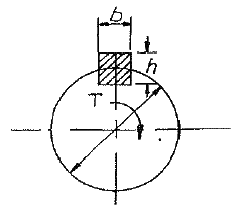
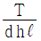
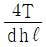
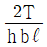
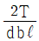
(정답률: 알수없음)
46. 다음 중 미끄럼 베어링 재료로 적합하지 않은 것은?
- 화이트 메탈
- 알루미늄 합금
- 카드뮴 합금
- 주강
(정답률: 알수없음)
47. 관의 안지름을 D[cm], 평균유속을 v[m/s]라 하면 평균유량 Q[m3/s] 는 어떻게 표현되는가?
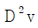
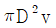
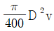
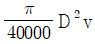
(정답률: 알수없음)
48. 이직각 모듈은 m=5, 나선각(helix angle)이 β= 20°, 잇수 24인 헬리컬 기어의 피치원의 지름은 약 mm 인가?
- 120.16
- 130.44
- 127.70
- 158.04
(정답률: 알수없음)
49. 굽힘모멘트 M과 비틀림모멘트 T가 동시에 받는 축에 대한 상당굽힘모멘트 Me와 상당비틀림모멘트 Te에 대한 식으로 맞는 것은?
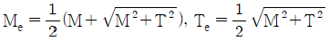
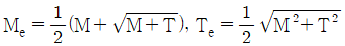
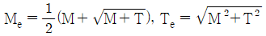
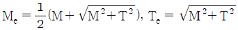
(정답률: 알수없음)
50. 나사산과 골을 반지름이 같은 원호로 이은 모양을 하고 있으며, 전구의 결합부와 같이 박판의 원통을 전조하여 만드는 것 등에 사용되는 나사는?
- 둥근나사
- 미터나사
- 유니파이나사
- 관용나사
(정답률: 알수없음)
51. 박스형 대형 실험장치를 이동하기 위하여 실험장치에 설치하여야 할 볼트는?
- 아이볼트
- 스테이 볼트
- 나비 볼트
- T몰트
(정답률: 알수없음)
52. 기본부하 용량이 18000[N]인 볼베어링이 하중 2000[N]을 받고 150[rpm]으로 회전할 때, 이 베어링의 수명은 몇 시간인가?
- 83000시간
- 81000시간
- 76800시간
- 74200시간
(정답률: 알수없음)
53. 지름 d인 축에 끼인 키에 작용하는 최대 토크를 키의 측면의 압축저항으로 받는다면 필요한 키의 측면적은? (단, 키의 압축응력을 σc, 전단응력을 τ라고 할 때, σc= 2.5τ 이다.)
- πd2/3
- πd2/6
- πd2/10
- πd2/12
(정답률: 알수없음)
54. 축에 토크 T가 작용하고 축의 극단면 2차모멘트를 IP, 가로탄성계수를 G, 축의 길이를 ℓ이라고 할 때, 비틀림 각 θ는?
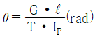
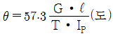
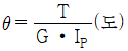
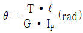
(정답률: 알수없음)
55. 그림에서 바깥지름30[mm]인 사각나사에서 피치6[mm], 나사산 높이가 피치의 1/2 일 때, 이 나사의 유효지름은 몇 mm 인가?
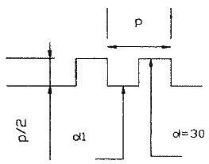
- 24
- 25
- 27
- 29
(정답률: 알수없음)
56. 평행한 두 축 사이의 거리가 약간 떨어진 경우 사용되는 커플링으로 두 축 사이에 중간 원판을 끼워서 동력전달을 하게 되며, 윤환문제와 원심력 때문에 고속회전에는 부적당한 커플링은?
- 플렉시믈(flexible) 커플링
- 올덤(oldham) 커플링
- 셀러(seller) 커플링
- 유니버설(universal) 커플링
(정답률: 알수없음)
57. 2장의 판재를 고정시키고 있는 삼각나사(산의 각도 60°) 접촉면의 마찰계수(μ)=0.15 일 때, 너트가 자립상태를 유지하기 위한 리드각(λ)은 최대 몇 ° 이내 이어야 하는가?
- 2.46°
- 4.92°
- 7.38°
- 9.82°
(정답률: 알수없음)
58. 지름피치 12, 잇수가 각각 35, 109인 표준 스퍼 기어가 외접하여 물리고 있을 때 그 중심거리가 몇 mm인가?
- 136.5
- 152.4
- 167.8
- 175.3
(정답률: 알수없음)
59. 평 벨트 전동에 비하여 V벨트 전동의 특징에 관한 설명으로 틀린 것은?
- 접촉 면적이 넓으므로 큰 동력을 전달한다.
- 미끄럼이 적고, 속도비가 크다.
- 장력이 작으므로 베이렁에 걸리는 하중도 작다.
- 바로걷기와 엇걸기가 가능하다.
(정답률: 알수없음)
60. 강판의 효율이 80[%]인 리벳 이음에서 피치가 20[mm] 이면 리벳의 지름[mm]은 다음 중 몇 mm 인가?
- 16
- 8
- 6
- 4
(정답률: 알수없음)
4과목: 철도차량공학
61. 전기기관차 주 변환장치의 제원으로 옳은 것은?
- 입력전압범위 : 3상 교류 0V ~ 2030V
- 견인 운전 시 공칭 출력전류 : 3상 전류 430A
- 공칭입력전압 : 2×1230V 1AC
- 제동운전 시 공칭 출력전류 : 3상 교류 640A
(정답률: 알수없음)
62. 새마을동차 운행 중 비상 동작이 체결되는 원인이 아닌 것은?
- 비상제동변 작용
- ATS 동작
- 살사 제동변 동작
- 제동관 파열
(정답률: 알수없음)
63. 대차의 사행운동을 방지하는 방법으로 가장 적절한 것은?
- 차륜 답면 구배를 작게 한다.
- 고정축거를 작게 한다.
- 대치의 회전저항을 적절히 작게 한다.
- 차축 저널박스의 지지 강성을 약하게 한다.
(정답률: 알수없음)
64. 다음 중 객차의 종류에 해당되지 않는 것은?
- 소화물차
- 식당차
- 병원차
- 침대차
(정답률: 알수없음)
65. 주발전기 발전전압 100V, 전류 7087A, 발전기효율 95% 일 때 디젤전기관차 주발전기의 구동마력은 얼마인가?
- 1,000
- 950
- 903
- 75
(정답률: 알수없음)
66. 전후동력 새마을호 디젤동차 전기장치 조작 스위치 중 접지확인 스위치는?
- ABS
- ERS
- GRS
- URS
(정답률: 알수없음)
67. 디젤전기기관차에서 전기회로 결선기법으로 틀린 것은?
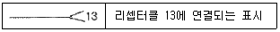
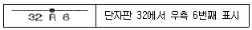
(정답률: 알수없음)
68. 전후동력형새마을동차에서 역전기어 작동실린더 수동취급시 차량의 상태 중 틀린 것은?
- 차량은 정지상태
- 역전간은 중립위치
- 역전간은 차량진행방향
- 열차는 제동체결상태
(정답률: 알수없음)
69. 좌우차륜의 접촉점간 거리를 1500mm로 가정한 표준 궤간의 이론 캔트는 로 표현된다. 좌우차륜의 접촉점간 거리를 1120mm로 가정한 협궤인 경우 이론 캔트 식은?
(정답률: 알수없음)
70. 철 자륜 형식의 도시철도차량 대차 제작 관련 설명으로 틀린 것은?
- 완성된 대차틀은 용접 후 응력제거를 하였다.
- 동력대차와 부수대차의 기본구조는 다른 형태로 제작하였다.
- 차륜 시트에는 유압으로 차륜을 분리하기 위한 유압구를 설치하였다.
- 액슬 박스 원통 롤러 베어링의 내구수명을 350만 km 이상으로 하였다.
(정답률: 알수없음)
71. 도시철도차량 관련규정에서 전동차의 차륜관리기준으로 잘못된 것은?
- 차륜의 바깥지름 삭정한도는 774mm로 한다.
- 차륜 돌출 턱의 높이는 25mm 이상 35mm 이하로 한다.
- 차륜 돌출 턱의 두께는 23mm 이상 34mm 이하로 한다.
- 차량에 조합된 차륜의 동일 축 차륜 좌우 지름치는 1.0mm 이하로 한다.
(정답률: 알수없음)
72. 디젤전기기관차에서 윤활유 계통의 플러싱(flushing) 요령이다. 틀린 것은?
- 윤활유를 배출하고 깨끗이 청소 후 플러싱유를 넣고 최소한 30분간 운전하고 면밀한 검사를 한다.
- 오손의 정도에 따라 플러싱 소요시간이 2시간 정도가 될 경우도 있다.
- 플러싱이 끝나면 플러싱유를 배출하고 규정된 신유를 주입한다.
- 파손된 금속분말을 제거할 때 등유를 사용할 수 없다.
(정답률: 알수없음)
73. 철도차량 연결완충기의 조건으로 틀린 것은?
- 완충용량이 커야 한다.
- 초압력이 작아야 한다.
- 흡수에너지가 작아야 한다.
- 구조가 간단하고 보수가 용이하여야 한다.
(정답률: 알수없음)
74. 열차의 운전 중이나 차량의 연결시에 발생하는 충격에너지를 흡수하고 완충시간을 연장해서 승객이나 화물에 주어지는 완충력을 완화하기 위하여 설치된 장치는?
- 연결장치
- 압축장치
- 복원장치
- 완충장치
(정답률: 알수없음)
75. 다음 중 내연기관에 대한 설명 중 관계없는 것은?
- 가스나 액체 상태의 연료와 공기를 혼합할 수 있는 일정 체적의 연소실이 있다.
- 일정 사이클마다 간헐적으로 폭발 연소시켜서 열에너지를 발생시킨다.
- 내연식 체적형 열기관이다.
- 기관 본체의 외부에서 생성된 작동유체를 이용하여 기계적 일을 하는 열기관이다.
(정답률: 알수없음)
76. 디젤기관의 연소실에 분사된 연료의 연소과정을 순서대로 바르게 나타낸 것은?
- 제어연소기간 – 착화지연기간 – 폭발연소기간 – 후기연소기간
- 착화지연기간 – 제어연소기간 – 폭발연소기간 – 후기연소기간
- 착화지연기간 – 폭발연소기간 – 제어연소기간 – 후기연소기간
- 제어연소기간 – 폭발연소기간 – 착화지연기간 – 후기연소기간
(정답률: 알수없음)
77. 객차의 도어엔진에 대한 개폐속 조정 방법으로 틀린 것은?
- 열림 쿠션 조정나사는 조이면 강해진다.
- 닫힘 쿠션 조정나사는 풀면 약해진다.
- 열림 속도 조정나사는 조이면 빨라진다.
- 닫힘 속도 조정 나사는 풀면 빨라진다.
(정답률: 알수없음)
78. 철도차량의 난방능력 산출시 기초 조건이 아닌 것은?
- 차내·외 온도차로 인한 열량
- 승객 및 차내기기에 의한 열량
- 태양의 방사열량
- 환기에 의한 열량
(정답률: 알수없음)
79. 철도차량 관련규정에서 정한 객차 등의 설계유형에 따른 분류기준 중 설계유형 [C]에 해당하지 않는 차량은?
- 고속철도차량
- 디젤동차
- 무인운전의 객차등
- 전기동차
(정답률: 알수없음)
80. 철도차량의 제동방식 중 전기제동으로 틀린 것은?
- 엔진제동
- 발전제동
- 회생제동
- 와전류제동
(정답률: 알수없음)
5과목: 기계제작법
81. 아크 용접에 있어서 교류와 직류의 경우에 관한 설명 중 틀린 것은?
- 교류는 직류에 비해서 아크의 안정성이 떨어진다.
- 교류는 비피복봉 사용이 가능하고, 직류는 비피복봉 사용이 불가능하다.
- 교류는 극성변화가 불가능하고, 직류는 극성변화가 가능하다.
- 직류는 전격의 위험이 적고, 교류는 전격의 위험이 많다.
(정답률: 알수없음)
82. 절삭과정에서 공구의 온도를 측정하는 방법으로서 열전대를 사용하는 경우가 많다. 공구에 열전대를 삽입하기 위한 가공법으로 다음 중 가장 적합한 것은?
- 화학 연마
- 전해 연마
- 방전 가공
- 버핑 가공
(정답률: 알수없음)
83. 상하의 형에 문자나 무늬의 요철에 붙이고, 이 사이에 소재를 놓고 압축하여 문자나 무늬를 생성하는 가공 방법은?
- 압출 가공(extruding)
- 업세팅 가공(up setting)
- 압인 가공(coining)
- 블랭킹 가공(blanking)
(정답률: 알수없음)
84. 아세틸렌가스는 매우 타기 쉬운 기체이다. 자연발화 온도는?
- 780 ~ 790℃
- 406 ~ 408℃
- 5⑤ ~ 515℃
- 62 ~ 80℃
(정답률: 알수없음)
85. 두께 2mm의 철판에 ø20mm의 구멍을 뚫을 때, 펀칭에 가하는 힘은 최소 몇 N 이상이어야 하는가? (단, 철판의 전단저항은 450MPa 이다.)
- 42132
- 56559
- 12561
- 27867
(정답률: 알수없음)
86. 소성 가공 방법이 아닌 것은?
- 컬링(curling)
- 엠보싱(embossing)
- 카핑(copying)
- 코이닝(coining)
(정답률: 알수없음)
87. 얇은 판재론 된 목형은 변형되기 쉽고 주물의 두께가 균일하지 않으면 용융금속이 냉각 응고시에 내부 응력에 의해 변형 및 균열이 발생할 수 있으므로 이를 방지하기 위한 목적으로 쓰이고 사용한 후에 제거하는 것은?
- 구배
- 수축 여유
- 코어 프린트
- 덧붙임
(정답률: 알수없음)
88. 열처리에서 강(鋼)을 청화물(CN)과 작용시켜 침탄과 질화가 동시에 일어나도록 하는 청화법(cyaniding)은 다음과 같은 장·단점이 있다. 틀린 것은?
- 균일한 가열이 이루어지므로 변형이 적다.
- 온도 조절이 용이하다.
- 산화가 일어나기 쉽다.
- 침탄층이 얇고 가스가 유독하다.
(정답률: 알수없음)
89. 커플링으로 연결된 CNC 공작기계의 볼 스크류 피치가 6[mm], 서보 모터의 회전 각도가 270° 일 때 테이블의 이동 거리는?
- 1.5[mm]
- 2.5[mm]
- 3.5[mm]
- 4.5[mm]
(정답률: 알수없음)
90. 주물사의 구비조건으로 아닌 것은?
- 통기성이 좋을 것
- 성형성이 좋을 것
- 열전도성이 높을 것
- 내열성이 높을 것
(정답률: 알수없음)
91. 소성가공 시 열간가공과 냉간가공은 무엇으로 구별하는가?
- 재결정 온도
- 변태점 온도
- 담금질 온도
- 풀림 온도
(정답률: 알수없음)
92. 방전가공시 전극(가공공구)재질로 적당하지 않은 것은?
- 황동
- 텅스텐
- 구리
- 알루미늄
(정답률: 알수없음)
93. 이미 치수를 알고 있는 표준 값과의 편차를 구하여 치수를 알아내는 측정방법은?
- 절대 측정
- 비교 측정
- 간접 측정
- 직접 측정
(정답률: 알수없음)
94. 하방잠김형, 압착형, 당기기형, 직선이동형과 같이 4가지 기본적인 클램핑 작용을 하며, 작용력에 비해 고정력이 매우 큰 클램프는?
- 토글 클램프
- 캠 클램프
- 후크 클램프
- 스트랩 클램프
(정답률: 알수없음)
95. 다음 중 바이트의 마모에 관계없는 것은?
- Crater wear
- Filling
- Flank wear
- Chipping
(정답률: 알수없음)
96. 저탄소강의 표면에 탄소를 침투시키는 고체 침탄법에 대한 일반적인 설명으로 틀린 것은?
- 침탄시간이 길어지면 침탄깊이가 깊어진다.
- 소량생산에 적합하다.
- 큰 부품의 처리가 가능하다.
- 보통 침탄 깊이는 5~10mm 이다.
(정답률: 알수없음)
97. 프레스 작업(press working) 가공방식이 아닌 것은?
- 래핑(lapping)
- 벤딩(bending)
- 드로잉(drawing)
- 엠보싱(embossing)
(정답률: 알수없음)
98. 급속귀환 운동을 하는 기계는 다음 중 어느 것인가?
- 선반
- 밀링
- 셰이퍼
- 드릴링머신
(정답률: 알수없음)
99. 3차원 측정기는 X, Y, Z의 3차원 공간상에서 측정점의 좌표점을 검출하여, 데이터를 컴퓨터로 처리하는 측정기이다. 3차원 측정기를 조작상으로 분류할 때 여기에 해당되지 않는 것은?
- 수동형(floating type)
- 조이스틱형(joystick type)
- CNC형(CNC type)
- 겐트리형(gantry type)
(정답률: 알수없음)
100. 동시에 여러 개의 드릴을 설치하여 공작물에 여러 개의 구멍을 동시에 뚫는 구조의 드릴링머신은 무엇인가?
- 탁상드릴링머신(bench drilling machine)
- 레이디얼드릴링머신(radial drilling machine)
- 직립드릴링머신(Upright drilling machine)
- 다축드릴링머신(multi spindle drilling machine)
(정답률: 알수없음)